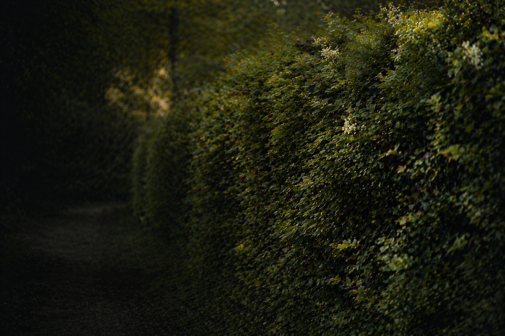
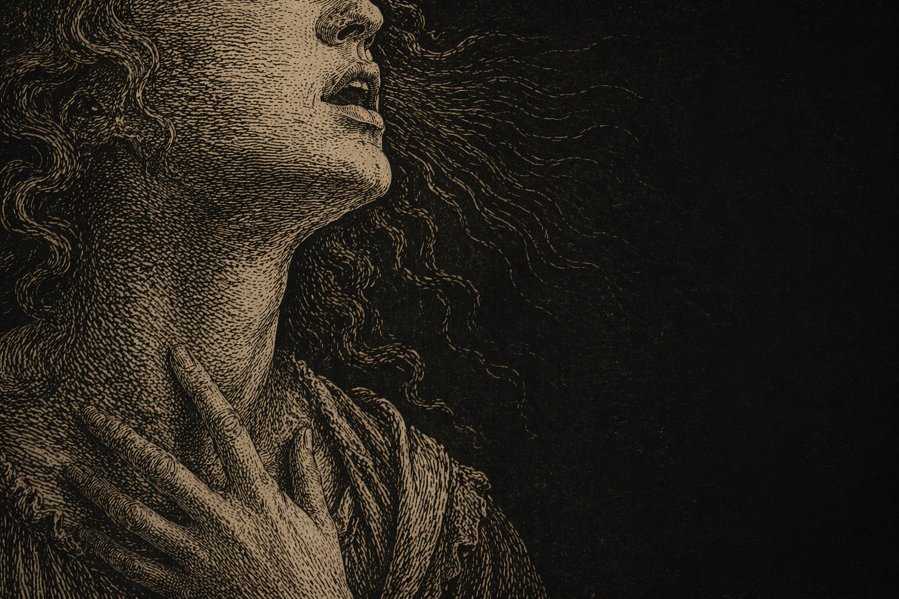
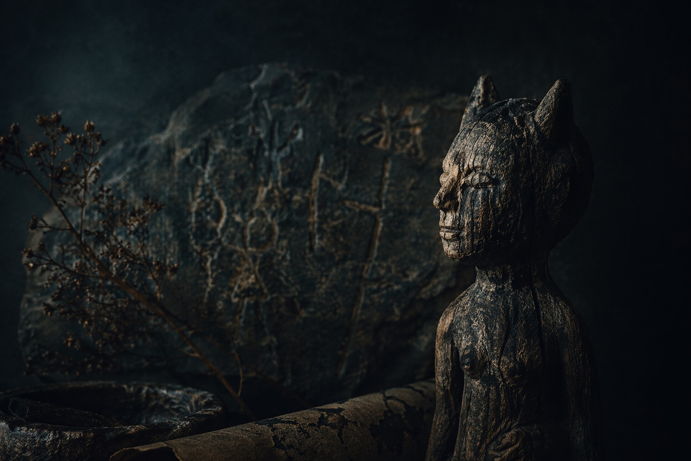
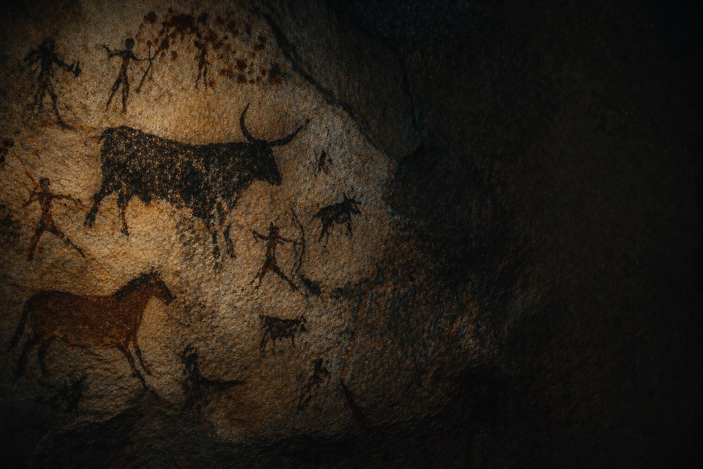

Die Fundstücke werden ab Herbst 2026 schrittweise freigelegt — als langsam wachsendes Corpus aus Primärquellen, Bildern und Dokumenten zur Figur der Hexe.
Das Projekt
Die europäischen Hexenverfolgungen des 16. und 17. Jahrhunderts waren weder rein religiös noch ein Phänomen des Mittelalters: Sie entstanden in der frühen Neuzeit, als sich weltliche Macht, staatliche Gerichtsbarkeit und patriarchale Ordnung neu festigten. In Zeiten von Krisenangst, Körperkontrolle und sozialer Unsicherheit brauchte es ein Feindbild — und man fand es in der Figur der Hexe. Sie traf vor allem Frauen, konnte aber grundsätzlich jede und jeden an den Rändern der Gesellschaft treffen.
Dieses Bild hat sich über Jahrhunderte ins kulturelle Gedächtnis eingeschrieben. Heute erfährt es vielfältige Aneignung: als Chiffre feministischer Theorie seit den 1970er Jahren, als vokales Prinzip der Popmusik von Kate Bush bis Florence Welch, als digitale Praxis einer Generation, die Körper, Geschlecht und Spiritualität neu verhandelt.
Hexenwerk folgt diesen gegenwärtigen Begegnungen. Als Forschungs- und Schreibprojekt zwischen Musikwissenschaft, Kulturgeschichte, Gender Studies und Theologie. In Titelgeschichten, Zwischentönen und Fundstücken.
Titelgeschichten
Andante, con fuoco.
Tief recherchiert, essayistisch erzählt. Jede Titelgeschichte folgt einer Figur, einem Motiv oder einer Frage durch Jahrhunderte und Genres.

Die Heckensitzende: Warum die Hexe der Archetyp ist, auf den wir gewartet haben
„Hexe“ kommt vom althochdeutschen „Hagazussa“ – auf der Hecke sitzend. Zwischen Dorf und Wald, Heilung und Gift, Intuition und Wissen.
Juni 2026 · 12 Min.
Die Stimme als Hexerei: Kate Bushs vokale Entgrenzung
Wie Kate Bush mit ihrer Stimme ein Terrain betrat, das weder Pop noch Klassik, weder Schrei noch Gesang war – und damit eine Tradition begründete, die bis heute nachwirkt.
Demnächst
Wiederkehr der Unheimlichen: Hexenfiguren im kollektiven Bildgedächtnis
Von den Holzschnitten der frühen Neuzeit bis zu Instagrams #WitchTok – eine Archäologie der Bilder, die unsere Vorstellung von Hexen prägen.
Demnächst
Björks Biophilia als akustischer Animismus
Warum Björks radikalstes Album gleichzeitig ihr hexenhaftestes ist – und was das über Natur, Technologie und weibliche Stimme erzählt.
DemnächstMotive
Wiederkehrende Motive
Die Texte sind nicht nach Themen sortiert, sondern bewegen sich in einem Feld wiederkehrender Motive – Figuren, die sich durch unterschiedliche Gegenstände ziehen.
Zwischentöne
Mezza voce, ma incisivo.
Notizen, Besprechungen, Seitenwege. Wo die Titelgeschichten vertiefen, öffnen die Zwischentöne das Feld – thesenhafter, freier, überraschender.
Der Malleus Maleficarum als ästhetisches Dokument
Was der »Hexenhammer« über die Bildsprache des Verdachts erzählt – und warum seine Rhetorik bis heute nachhallt.
Notizen zu The Witch (Robert Eggers, 2015)
Warum Eggers' historistische Präzision den Film zu einem der ambivalentesten Hexenporträts der Gegenwart macht.
Goyas Hexen und das 18. Jahrhundert der Aufklärung
Wie eine Bildserie die Nachtseite der Vernunft verhandelt – und was das für unsere Gegenwart bedeutet.
Anne Sextons Transformations: Märchen als feministische Hexerei
Wie Sexton in den 1970ern Grimms Märchen umschreibt – und damit eine Linie vorbereitet, die bis zu Angela Carter führt.
Corpus · Inventar in Aufbau
Fundstücke
Pizzicato, con memoria.
Primärquellen, historische Bilder, Dokumente, Zeitungsausschnitte. Ein kuratierter, langsam wachsender Bestand.
Im Kern
Stimme, Performance
und kulturelles Gedächtnis
Im Zentrum steht eine Frage: Wie kehrt die Figur der Hexe in der Popmusik seit den 1970er Jahren zurück – bei Kate Bush, Björk, Tori Amos, Florence Welch? Was aktivieren diese Stimmen, und welche historischen Schichten werden dabei hörbar?
Diese Frage bildet den Kern. Hexenwerk öffnet das Feld darüber hinaus: für Seitenwege, Hintergrundtexte und Fundstücke, die den engeren Rahmen übersteigen.
Mehr über das Projekt →